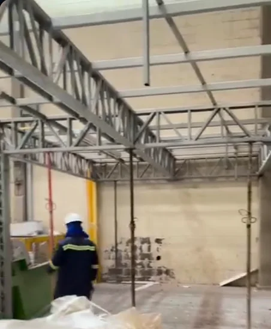

Estruturas metálicas
Fabricação e montagem de estruturas para obras e espaços industriais.

Estruturas, portões e peças metálicas para obras, comércios e indústrias. Da fabricação à montagem.
Fabricação e montagem de estruturas para obras e espaços industriais.
Portões metálicos para galpões, empresas e áreas de acesso.
Soluções metálicas feitas de acordo com as medidas e a circulação do espaço.
Peças sob medida para ambientes comerciais e profissionais.
Peças e estruturas metálicas adaptadas à rotina do seu negócio.
Parceria com construtoras, arquitetos e engenheiros para executar projetos em metal.

Conheça o portão industrial sob medida e acompanhe os registros de montagem e corte de estruturas.
Explorar projetos